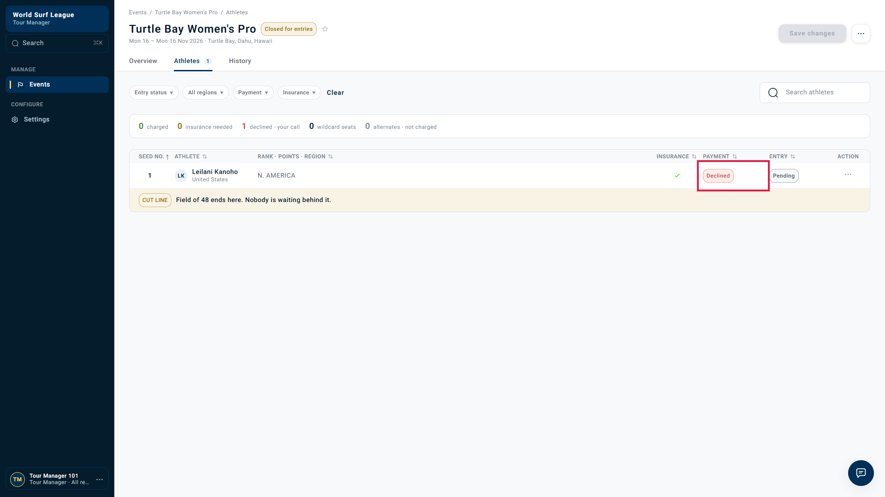
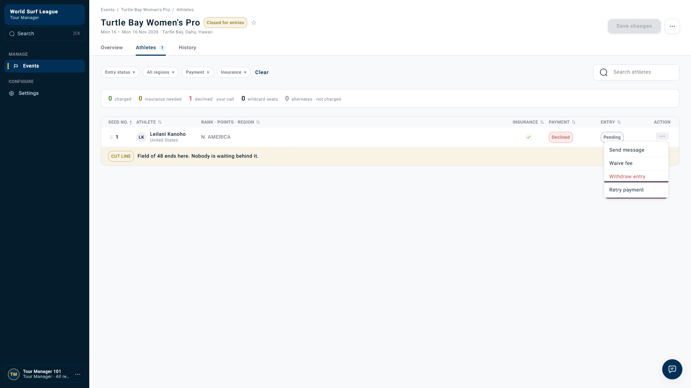
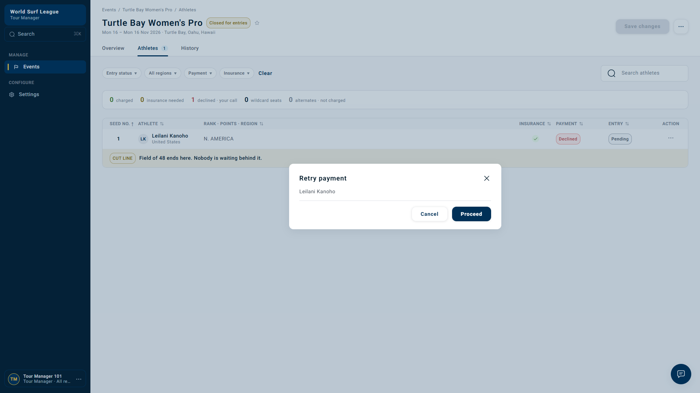
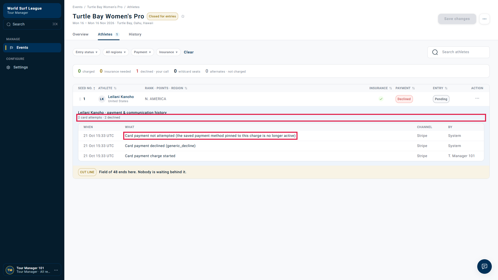
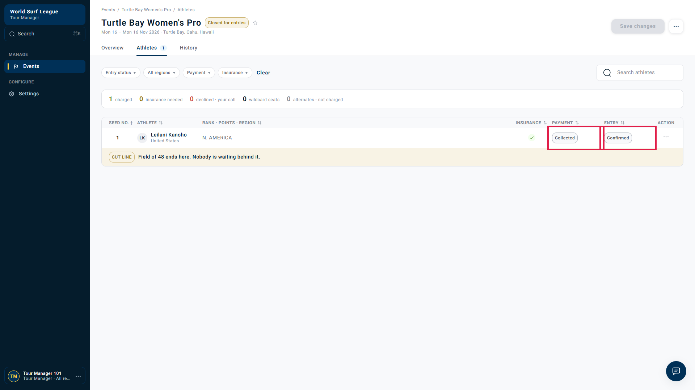

Payment retries · QA-RETRY-05 · Bug report · Rerun on dev 21 October 2026, 15:31–15:36 UTC · Stripe test mode
Manager "Retry payment" after a generic decline returns success but attempts no payment, and is counted as a declined attempt
Suggested priority: Medium (P2) · Tour Manager UI + payment service · Jira: pending
All payment-retry bug reports · First observed (card decline comparison) · Download bug report · Raw log
In simple words
The card was declined. The card becomes unusable after that kind of decline. The manager pressed Retry payment → Proceed and saw no error, but no payment was tried. The history then says "2 card attempts · 2 declined" right above a line saying the payment was not attempted. The Retry option stays on the menu, so the manager can keep retrying with no effect. Only the athlete changing the card fixed the payment.
Checks in this rerun
| Check | Result |
|---|---|
| First charge with test card 4000 0000 0000 0341 is declined (generic_decline) | Reproduced |
| Retry payment → Proceed returns HTTP 200 with no error in the UI | Bug: success shown, nothing charged |
| History says "Card payment not attempted (the saved payment method pinned to this charge is no longer active)" | Confirmed |
| History header counts it: "2 card attempts · 2 declined" (Stripe was called once) | Bug: count overstated |
| Retry payment still offered after the non-attempt | Bug: repeatable no-op |
| No email to the athlete in the 3 minutes after the decline | Separate finding (see below) |
| Athlete changes card to test Visa 4242 → re-charged automatically → Collected / Confirmed | Works |
Flow graph: what happened
Recording: Tour Manager UI
Real Tour Manager session on dev: Athletes tab, Confirm field & charge, Retry payment → Proceed, the history panel, and the final roster after the card change.
1 · Declined after Confirm & charge

2 · Retry payment is offered

3 · Retry dialog: no warning that the card is inactive

4 · History: "not attempted", yet counted as 2 attempts · 2 declined

5 · Collected / Confirmed after the athlete changed the card

Steps to reproduce
- Athlete registers (Regional membership paid with 4242) and enters a QS event with Stripe test card
4000 0000 0000 0341. - Tour Manager closes entries → Athletes → Confirm field & charge → tick "I have reviewed the seed list" → Confirm & charge.
- Row shows Declined / Pending.
- Actions for [athlete] → Retry payment → Proceed.
- Open the athlete's payment & communication history (click the athlete).
Expected vs actual
| Expected | Actual |
|---|---|
| Retry hidden or disabled while the card is inactive, or the dialog says the athlete must update the card | Retry offered; dialog shows only the athlete name and Proceed |
| A retry that cannot charge tells the manager so | HTTP 200, seed list refreshed, no message |
| History counts only real attempts: 1 card attempt · 1 declined, plus a "not attempted" line | "2 card attempts · 2 declined" |
Timeline and API evidence (UTC)
| Time | Request / event | Result |
|---|---|---|
| 15:31:41 | Event Turtle Bay Women's Pro opened for entries (USD 150) | id 01a15f16-eb7b-7092-bf40-f010885443cc |
| 15:32:50 | Entry submitted with card 0341 | QS-2026-W-060-001 · entry 01a15f17-f898-75ad-8d75-4daeb3fcbc9b |
| 15:33:04 | POST /tour-manager/events/{event}/charge | HTTP 200 · {"charged":1,"skipped":[]} |
| 15:33:08 | Entry row | payment declined · entry pending · actions: message, waive, withdraw, retry |
| 15:33:19 | POST /tour-manager/events/{event}/entries/{entry}/actions {"code":"retry"} | HTTP 200 · body is the seed list ("stage":"charged"), no outcome for the retry |
| 15:33:35 | Entry row + history | still declined / pending · retry still offered · "Card payment not attempted (…no longer active)" · "2 card attempts · 2 declined" |
| 15:33:04–15:36:07 | Athlete inbox (Mailosaur) | 0 emails |
| 15:36:21 | Athlete card change to test Visa 4242 (POST /api/entries/{entry}/card, own session) | HTTP 202 |
| 15:36:29 | Entry row | collected · confirmed |
Full log, entry states and history bodies: results.json. Script: scripts/bugs/rerun-retry-inactive-card.mjs.
Related finding (separate ticket): no email at the first decline
In the 3 minutes after the decline the athlete received no email. Dev payment rules send the first notice 24 hours after the failure (24 h · 3 days · 5 days · 7 days), so the athlete hears nothing for a day. The earlier full-recovery run shows the same: decline at 14:37 UTC, first "Your entry fee … could not be taken" email only when the 24-hour check ran. The "Update your card" link in that email opens the dashboard, which has no card-update control.
Jira: pending
Technical notes
- A generic decline is classified
needs_new_method; onlyretryabledeclines are retried automatically (wsl-competition-service/domain/payment_retries.py). - The pinned saved card becomes inactive after the decline, so payment refuses the manual retry with "not attempted", but the BFF still answers 200 with the seed list.
- A card change from
RETRYABLEorNEEDS_NEW_METHODtriggers an immediate re-charge (RETRY_IMMEDIATELY_AFTER_PAYMENT_METHOD_UPDATE,wsl-payment-service), which is why recovery needed no manager retry.
Acceptance criteria
- With an inactive pinned card, Retry payment is hidden or disabled with the reason "the athlete needs to update the card".
- A retry that ends "not attempted" is reported to the manager in the UI.
- The history summary counts only real card attempts; "not attempted" is listed but not counted as an attempt or a decline.
- The automatic re-charge after the athlete updates the card keeps working.